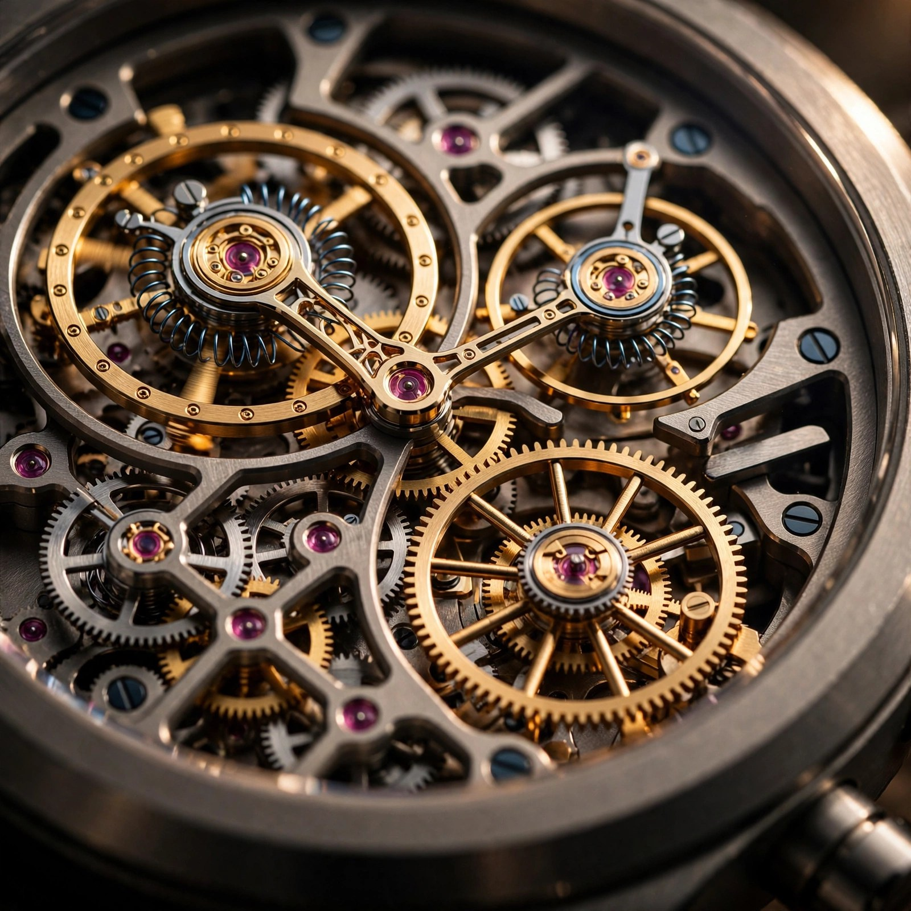

Two Hearts, One Case: The Dual-Frequency Architecture of the Zenith El Primero 9004
Most chronograph movements compromise by sharing a single mainspring, a single escapement, and a single frequency between timekeeping and timing. When the chronograph engages, it siphons energy from the same source that keeps the watch running. The Zenith El Primero 9004 refuses to participate in that tradeoff. It carries two independent oscillators, two mainsprings, and two gear trains on one base plate, running at frequencies separated by a factor of ten.

An Unsolvable Problem, Solved Twice
Chronograph design has always struggled with a fundamental contradiction that no amount of incremental refinement can resolve: higher frequency means finer resolution, a 4Hz movement divides each second into eight slices and a 5Hz movement manages ten, but cranking frequency higher carries costs that scale violently because energy consumption increases with the square of oscillation frequency, friction across the escapement accelerates component wear at a pace that shortens service intervals from decades to years, and starting and stopping the chronograph introduces shock loads into the gear train that affect timekeeping amplitude in ways that are measurable on a timing machine and occasionally visible to the wearer. For 150 years, chronograph engineers compromised on 3Hz or 4Hz. Tenths of a second were good enough.
Guy Sémon disagreed. A former aerospace engineer who joined LVMH's watchmaking R&D division, Sémon had worked on the TAG Heuer Mikrograph in the early 2010s with a fixation on a single question: could a mechanical movement measure hundredths of a second without destroying its own timekeeping accuracy in the process? His approach was architecturally radical and intuitively obvious once you heard it. Stop trying to make one movement do two jobs. Build two independent movements on one base plate, each optimized for its task, one running at a conventional 5Hz for all-day accuracy and power efficiency while the other screams at 50Hz, burning through energy at catastrophic speed but measuring time with a resolution that no shared-escapement design could touch.
When Zenith unveiled the Defy El Primero 21 at Baselworld 2017, the El Primero 9004 movement inside delivered exactly that dual-chain architecture, and it represented the most significant evolution of Zenith's signature caliber since Charles Vermot famously hid the original El Primero tooling from Zenith's own management during the quartz crisis of 1975.
Dual-Chain Architecture
Zenith calls the 9004's internal layout a "double-chain structure," and both chains share the same 32.8mm base plate but almost nothing else. Each has its own barrel, gear train, escapement, and balance wheel, and they are mechanically isolated so thoroughly that when the chronograph activates, no energy transfers from the timekeeping barrel to the chronograph train and no shock from the chronograph's column wheel engagement propagates back to the timekeeping balance. In practice, the 9004 behaves as if two separate calibers occupy one case.
On the timekeeping side, a conventional El Primero architecture runs at 36,000 vibrations per hour: five hertz, a full-size balance wheel with a conventional hairspring oscillating with an amplitude sufficient for COSC-grade accuracy, power coming from an automatic winding system with a rotor cut into Zenith's signature star motif that feeds a barrel storing roughly 50 hours of reserve. Standard stuff, well-executed, uncontroversial.
On the chronograph side, everything changes. A second, smaller balance wheel oscillates at 360,000 vph. Fifty hertz. Where the timekeeping balance swings with visible, stately amplitude, the chronograph balance vibrates at a speed that renders it a blur through the case back, its hairspring dramatically shorter, its inertia carefully minimized. A second barrel, nearly as large as the timekeeping barrel, stores energy for the chronograph alone, but the 50Hz oscillation devours it: full charge lasts approximately 50 minutes.
That ratio tells you everything about the physics involved: same barrel volume, roughly the same mainspring dimensions, but a factor of one thousand separating the two power reserves because each tick of the chronograph escapement requires impulse energy, and at 50Hz the pallet fork and escape wheel cycle 360,000 times per hour versus 36,000 times at 5Hz, meaning ten times the impulse events per unit time with friction losses in the pivots, pallet jewels, and escape wheel teeth compounding at each event until the barrel drains proportionally.
Silicon at 360,000 Beats
At 50Hz, material selection becomes the dominant engineering constraint because steel pallet forks and escape wheels, adequate at 4Hz or 5Hz, would generate intolerable friction and inertial resistance at 360,000 vph, and Zenith solves this with silicon: both the pallet fork and escape wheel for the 50Hz train are fabricated from deep reactive-ion-etched silicon wafers, yielding components with mass roughly one-third that of their steel equivalents.
Silicon's advantages compound at high frequency in ways that are quantifiable and significant across every relevant dimension: its density of 2.33 g/cm³ versus steel's 7.8 g/cm³ reduces the rotational inertia of the escape wheel by approximately 70 percent, which directly reduces the torque required from the barrel at each impulse; its crystalline surface has a coefficient of friction against synthetic ruby of approximately 0.1, well below the 0.15 to 0.20 typical of oiled steel on ruby, meaning it operates without lubrication, eliminating viscosity-dependent rate variations as lubricant degrades over years of service and preventing migration of oil onto surfaces where it causes drag rather than reducing it; and it is entirely non-magnetic, which matters because at 50Hz even trace magnetization of steel components would produce rate errors that accumulate rapidly over the 360,000 interactions per hour between escape wheel and pallet fork.
Early production El Primero 9004 movements used carbon nanotube composite hairsprings for both balance wheels, a material patented by LVMH's central R&D group that offered theoretical advantages in thermal stability and paramagnetic neutrality. In subsequent production, Zenith quietly reverted to conventional Nivarox hairsprings without official explanation, though industry observers noted that consistency and serviceability were likely factors: Nivarox is the known quantity that every watchmaker in every authorized service center on earth can regulate and replace, while carbon nanotube composites require specialized tooling and calibration protocols that complicate long-term maintenance for a watch intended for serial production rather than limited-edition showcase.
What Happens When You Press the Button
Engaging the chronograph on a Defy 21 is unlike engaging it on any conventional chronograph. Press the pusher at two o'clock and the column wheel rotates, releasing the chronograph clutch, and the central seconds hand begins spinning, not crawling, completing one full revolution every single second in 100 discrete steps that advance one hundredth-of-a-second graduation per oscillation, tracing the outer track of the dial in a sweeping blur that looks almost mechanical-watch-impossible.
Startling, and intentionally so. Mechanical watches train you to expect stately motion, where a 4Hz chronograph seconds hand moves in eight discrete ticks per second that are each visible and countable, and a 5Hz hand is only slightly smoother with ten ticks. At 50Hz, the hand moves so fast that the eye cannot resolve individual steps, appearing to sweep continuously like a quartz seconds hand but faster, completing a lap that a conventional chronograph seconds hand needs sixty seconds to finish. Stop the chronograph and it freezes at a precise hundredth-of-a-second graduation, readable under a loupe, though far beyond human reaction-time precision in practice.
At three o'clock sits a 30-minute counter, at six a 60-second counter, and at twelve a power reserve indicator showing remaining energy in the chronograph barrel that, when it reaches zero, triggers automatic chronograph shutdown without affecting timekeeping. Both systems share a case and a crown but little else: winding the crown counterclockwise feeds the timekeeping barrel via the automatic winding system or manual winding, while a separate crown detent winds the chronograph barrel alone and requires approximately 25 turns for a full charge.
Competitive Landscape: Four Solutions to the Same Problem
Isolating the chronograph from timekeeping is not a new idea, and several high-end manufacturers have attempted it with architecturally distinct solutions that reveal how much engineering choices diverge when different teams tackle identical constraints.
Jaeger-LeCoultre's Duomètre à Chronographe uses a "Dual-Wing" concept with two independent barrels and two gear trains but a shared single escapement, where both power sources drive the same balance wheel through separate channels and the chronograph train engages the escape wheel directly, preserving amplitude stability when the chronograph starts and stops because both energy sources feed the same oscillator but limiting chronograph frequency to whatever the shared escapement runs at, which means no 50Hz and a resolution of 1/6th of a second.
Breguet's Tradition Chronographe Indépendant 7077 takes a different approach with two entirely separate transmission systems and separate balance wheels, similar in concept to the El Primero 9004, but using a linear blade-spring mainspring for the chronograph that buckles when the reset button is pressed, an elegant solution that nonetheless stays at conventional frequency with no attempt at hundredths-of-a-second resolution.
F.P. Journe's Centigraphe Souverain claims 1/100th-of-a-second measurement, but the mechanism deserves scrutiny: a 3Hz base movement drives a decoupling reduction gear that spins a central seconds hand through one rotation per second, passing 100 graduations, and the user stops it at a hundredth-second marker. But the underlying oscillator runs at 3Hz, dividing each second into only six impulses, which means between impulses the hand coasts on inertia and resolution is theoretical, dependent on stopping force consistency rather than oscillation frequency, making it by strict horological definition a 1/6th-of-a-second chronograph with a cosmetically faster hand.
TAG Heuer's Mikrograph, developed by the same Guy Sémon who later created the El Primero 9004, is the Defy 21's true sibling: launched in 2011, it also uses dual escapements with a 50Hz chronograph oscillator, and it was the proof of concept that validated the dual-chain approach before Sémon applied it to Zenith's El Primero platform, though it has since been discontinued after smaller production runs at higher price points. What the Defy 21 did was democratize the architecture, making a 1/100th-of-a-second chronograph available below CHF 15,000 in titanium.
311 Components, 53 Jewels, One Certification
With 311 components running on 53 jewels, both numbers are high for a serially produced chronograph movement but not absurdly so when you consider what the component count buys you. For context, Patek Philippe's CH 29-535 PS flyback chronograph has 270 components and 33 jewels while running a single 4Hz escapement with no pretension toward hundredths-of-a-second resolution, which means the 9004's additional 41 components and 20 jewels represent the cost of duplicating an entire escapement and gear train rather than excessive complexity for its own sake.
Despite this unconventional architecture, the 9004 earns chronometer certification from TimeLab, the independent Swiss testing authority formerly operated by the Geneva Observatory, which subjects movements to temperature variation and positional testing over multiple days and certifies accuracy to within tighter tolerances than COSC. That a movement with a 50Hz secondary oscillator passes these tests at all is a testament to the isolation between the two chains: when the chronograph is at rest, the timekeeping half performs as if the chronograph half does not exist, because mechanically it effectively does not.
Movement diameter is 32.8mm, thickness 7.9mm, and those dimensions drive the 44mm case diameter that all Defy 21 variants share, a size sitting at the upper boundary of comfortable wear for most wrists. At 14.4mm to 14.5mm thick depending on variant, the case is substantial but not extreme for a movement housing two complete gear trains, and Zenith has mitigated the visual bulk through aggressive skeletonization of the dial that draws the eye into the movement architecture rather than onto the case profile.
Material Variations and the Spectrum Argument
Since 2017, Zenith has released the Defy 21 in titanium, ceramised aluminum, carbon composite, 18k rose gold, white ceramic, full sapphire crystal, and stainless steel with diamond-set bezels, and while each material choice makes a case for itself, three deserve engineering attention.
Grade 5 titanium, Ti-6Al-4V, keeps total watch weight under 80 grams on a rubber strap at a density of 4.43 g/cm³, which matters when a 14.4mm-thick 44mm case would become wrist-fatiguing in steel at 7.85 g/cm³, and the microblasted finish Zenith applies reduces specular reflection while hiding minor contact scratches, both practical considerations for a watch designed to be worn actively rather than kept in a safe.
Carbon composite, used in the Defy 21 Carbon, is lighter still, though the advantage over titanium is marginal and the real appeal is aesthetic: random carbon fiber orientation in a polymer matrix produces a marbled surface texture that varies from case to case, making each watch technically unique, while the material's essentially non-magnetic properties remove any theoretical concern about case-induced magnetism near the 50Hz escapement.
Full sapphire crystal cases, used in limited-edition Felipe Pantone and Only Watch collaborations, push the material science furthest: synthetic sapphire (Al₂O₃) ranks 9 on the Mohs scale, is completely transparent, and requires extraordinarily slow CNC machining with diamond tooling to shape into a three-dimensional case where a single component can take weeks to complete. What you get is a watch that reveals the dual-frequency architecture from every angle, turning the movement's engineering into visual spectacle, though whether that spectacle justifies prices often two to three times the titanium version depends entirely on whether you consider transparency a feature or a material exercise.
Spectrum and Chroma editions applied PVD color treatment to the movement bridges and dial elements, translating the dual-frequency concept into visual language by rendering the 50Hz chronograph train in one hue and the 5Hz timekeeping train in another, with color graduating around the dial like visible frequencies of light. Limited to 50 or 200 pieces depending on iteration and priced from approximately CHF 14,400 to CHF 35,900, these editions offered no additional mechanical capability. Collectors paid the premium for an unusually direct visual articulation of what the movement actually does.
Limitations Worth Stating
Every movement has compromises, and a 50-minute chronograph power reserve means sustained timing tasks like tracking elapsed time during a long race or flight are simply not possible, because the chronograph is designed for burst measurement where you start, stop, read, and reset, and anything beyond 50 minutes exceeds the barrel's capacity, causing the chronograph to stop silently while the timekeeping side continues unaffected.
Case diameter is a problem for a growing segment of the market. At 44mm, the Defy 21 excludes buyers whose preferences have shifted toward 40mm and below, a trend Zenith has acknowledged with its Defy Skyline collection at 41mm and 36mm, but the 9004's physical dimensions make miniaturization impractical without fundamental redesign of the dual-chain layout because two escapements, two barrels, and a column wheel require real estate that cannot be compressed without sacrificing something structural.
Serviceability remains a concern because while Nivarox hairsprings are now standard, silicon chronograph escapement components are not field-replaceable by independent watchmakers, meaning service must go through Zenith's authorized network where the 50Hz train requires specialized equipment for rate regulation and amplitude testing at frequencies that standard timing machines do not support, and recommended service intervals of approximately 3 to 5 years are shorter than the 7-to-10-year intervals typical for conventional chronographs, reflecting the higher component stress inherent in 360,000 beats per hour.
And the philosophical objection: 1/100th of a second exceeds human reaction time by roughly an order of magnitude. Average human chronograph start-stop precision hovers around 200 to 300 milliseconds, which means measuring hundredths of a second with a mechanical pusher is, in practice, measuring your thumb's reflexes rather than any external event's duration, a fact Zenith does not pretend to dispute. What the Defy 21's resolution represents is a statement of mechanical capability rather than a practical timing tool at its claimed precision, and whether that proof carries practical value or purely intellectual value depends on what you think watches are for.
What It Costs, and Why It Matters
Entry-level Defy 21 models in titanium currently retail from approximately CHF 13,900 to CHF 15,500 depending on dial configuration, and that price buys the only serially produced, true 1/100th-of-a-second mechanical chronograph in regular production, because TAG Heuer's Mikrograph has been discontinued and F.P. Journe's Centigraphe, which does not truly measure hundredths by oscillation, trades secondhand above CHF 100,000, leaving no third option on the market.
At that price point the Defy 21 competes for wrist time against established chronographs from Rolex, Omega, and Patek Philippe that cost the same or more while offering conventional 4Hz or 5Hz resolution, and none of them can do what the 9004 does because none of them try: a Daytona is a cultural icon, a Speedmaster went to the moon, a Nautilus chronograph is a status signal, but the Defy 21 is an engineering argument. It wins on its own terms.
What Zenith built with the El Primero 9004 is a movement that separates two functions watchmakers have forced to coexist for a century and a half, gives each function exactly the oscillation frequency it needs, isolates them mechanically so neither degrades the other, and packages the result in a case starting below CHF 14,000. By any reasonable measure, it is the most technically ambitious serially produced chronograph movement in the world, it has been since 2017, and nothing currently in development from any manufacturer appears positioned to challenge that claim.